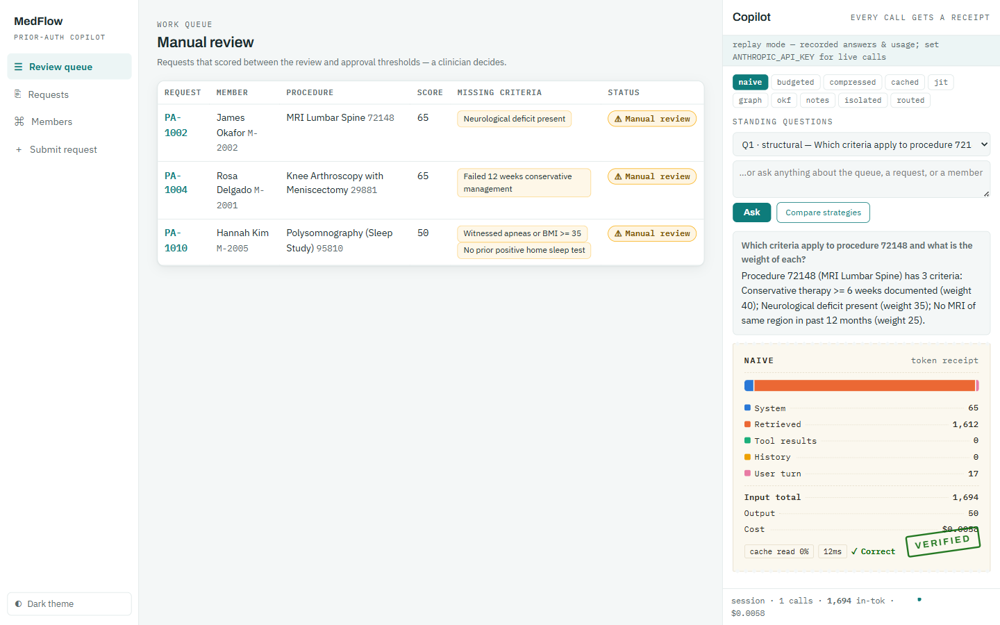

Fifteen modules, one instrument: MedFlow Copilot — a prior-auth app whose Token Lens shows the tokens, cost, and correctness of every AI call. You learn write / select / compress / isolate by flipping strategies and watching the receipts change — and every saving must survive its answer key, because savings only count when the answer is right.
📱 App guide — screens, receipts, and strategy toggles, with real screenshots
Every module in this course is a switch in MedFlow Copilot — flip a strategy, watch the receipt change. Start it once, keep it running:
cd app/api && ./mvnw spring-boot:run # terminal 1
cd app/ui && npm install && npm run dev # terminal 2 → localhost:5173No API key needed (replay mode). App guide with screenshots → · U00 explains the study rhythm: read → flip → lab → build, module by module.
